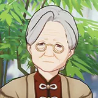

Chương I · Màn II
Lời Tạm Biệt Thể Xác Vĩnh Hằng
Nhiệm vụ Ma Thần — Liyue
Nhân vật xuất hiện
 Nhân vật chính · Nhà Lữ HànhLumineNhà Lữ Hành đến từ thế giới khác. Bị vị thần lạ mặt phong ấn và cướp mất người anh song sinh, cô bắt đầu hành trình đi tìm Bảy Vị Thần của Teyvat.
Nhân vật chính · Nhà Lữ HànhLumineNhà Lữ Hành đến từ thế giới khác. Bị vị thần lạ mặt phong ấn và cướp mất người anh song sinh, cô bắt đầu hành trình đi tìm Bảy Vị Thần của Teyvat. Bạn đồng hànhPaimonĐược Lumine cứu khỏi chết đuối hai tháng trước, Paimon tự nhận làm người dẫn đường cho cô. Hay ăn, hay nói, và rất ghét bị gọi là “thực phẩm dự trữ”.
Bạn đồng hànhPaimonĐược Lumine cứu khỏi chết đuối hai tháng trước, Paimon tự nhận làm người dẫn đường cho cô. Hay ăn, hay nói, và rất ghét bị gọi là “thực phẩm dự trữ”.- Khách của Vãng Sinh ĐườngZhongliNgười “trong nghề” được Childe giới thiệu. Am hiểu mọi phong tục của Liyue nhưng luôn quên mang tiền, mời Lumine cùng chuẩn bị Điển Lễ Tiễn Tiên cho Nham Vương Đế Quân.
 Quan Chấp Hành FatuiChildeGiữ lời hứa tìm “người có thể phá vỡ cục diện”, chi tiền cho Điển Lễ Tiễn Tiên, nhưng âm thầm cho người nghe ngóng chuyện Hoàng Kim Ốc.
Quan Chấp Hành FatuiChildeGiữ lời hứa tìm “người có thể phá vỡ cục diện”, chi tiền cho Điển Lễ Tiễn Tiên, nhưng âm thầm cho người nghe ngóng chuyện Hoàng Kim Ốc.
Người giữ Chuông Tẩy TrầnBình Lão LãoBà lão sống trên Ngọc Kinh Đài, cất “tất cả tài sản” trong một chiếc ấm thần kỳ. Bạn cũ của Zhongli.- Nhân viên Nhà Thuốc BubuQiqiCô bé cương thi chỉ hành động theo “mệnh lệnh” tự đặt cho mình, nhờ nhóm Lumine đi bắt “Dê Dừa” để đổi lấy Hương Bất Tử.
 Chủ Nhà Thuốc BubuBaizhuÔng chủ nhà thuốc cùng con rắn biết nói Changsheng. Bán Hương Bất Tử giá 299 vạn Mora sau khi bắt tay với Childe.
Chủ Nhà Thuốc BubuBaizhuÔng chủ nhà thuốc cùng con rắn biết nói Changsheng. Bán Hương Bất Tử giá 299 vạn Mora sau khi bắt tay với Childe. Thư ký Nguyệt Hải ĐìnhGanyuThư ký của toàn thể Thất Tinh, sứ giả đặc biệt của Ningguang. Tìm đến quán Ba Cốc Say Mèm để trao thư mời Lumine đến Quần Ngọc Các.
Thư ký Nguyệt Hải ĐìnhGanyuThư ký của toàn thể Thất Tinh, sứ giả đặc biệt của Ningguang. Tìm đến quán Ba Cốc Say Mèm để trao thư mời Lumine đến Quần Ngọc Các.- ENhân viên Ngân hàng Bắc QuốcEkaterinaNgười của Fatui ở quầy Ngân hàng Bắc Quốc, chỉ đường cho Lumine đến Lưu Ly Đình và nghe lén giúp Childe.
- SChủ tiệm ngọc Giải Thúy HàngShitouÔng chủ tiệm ngọc keo kiệt, nhưng chỉ lấy nửa giá rương Dạ Phách Thạch khi biết nó dùng để tiễn Nham Vương Gia.
- YNgười làm Sáp Thơm ở Xuân Hương DiêuYing'erCô gái hay trêu chọc, đã cùng Lumine nấu ba loại Sáp Thơm từ Hoa Nghê Thường ở bếp Vạn Dân Đường.
Các phần
- Phần 1Vãng Sinh
- Phần 2Chỉ Trăng
- Phần 3Dâng Hương
- Phần 4Chiếc Ấm Thần Kỳ
- Phần 5Khu Chợ
- Phần 6Guizhong
- Phần 7Đồng Hành
Toàn bộ lời thoại được lấy từ bản tiếng Việt chính thức của trò chơi. Ở những đoạn người chơi được chọn câu trả lời, truyện chọn một lựa chọn duy nhất.